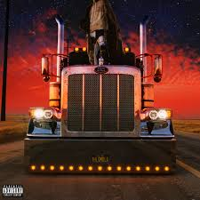

|  |
El ultimo tour del mundoLanzamiento: 27 de noviembre de 2020 Descripción: Es el tercer álbum de estudio en solitario y el cuarto en general del traper y cantante de Puerto Rico Bad Bunny. Con un contenido de dieciséis pistas, es un álbum principalmente de trape latinoamericano y reggaeton fusionado con una variedad de estilos de música rock , y presenta colaboraciones como invitados como Jhay Cortez , Rosalía y Abra. |